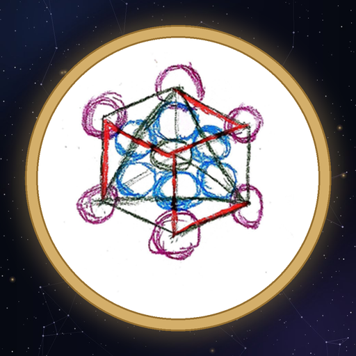

L’evento Felicitas Festival è una proposta che nasce dalla piattaforma FelicitasMundi, piattaforma che connette e supporta lo sviluppo economico e sociale di comunità contadine e spirituali dei territori nazionali.
Il Felicitas Festival sarà la presentazione del lancio dell’applicazione FelicitasMundi, che permette la facilitazione della connessione tra comunità, famiglie, aziende agricole, operatori terapeutici e insegnanti che vivono in contesti rurali e contadini, e che difficilmente riescono a entrare in connessione, se non attraverso le ordinarie piattaforme virtuali.
Noi invece cerchiamo di proporre uno strumento innovativo che unisce coscienza e tecnologia, e che tende a facilitare l’acquisto di beni — prodotti alimentari, rimedi e oggettistica —, l’acquisto di trattamenti, assistenza e consulenza, l’acquisto di lezioni; e a facilitare l’interscambio di doni, di prodotti, di rimedi naturali, per trovare un modo di sostenere e accompagnare all’autosufficienza alimentare ed energetica.
Quello che porteremo a Baratili, attraverso questo festival, è proprio l’impianto strutturale della piattaforma: cinque macroaree.
Una è dedicata alle realtà presenti nel territorio sardo che si autosostengono, che fanno mutuo aiuto, ai gruppi di acquisto solidale e ai mercati etici, che vengono presentati con i loro progetti; dando risalto alle figure lavorative ancora vive che portano avanti la conoscenza tradizionale di mestieri prevalentemente artigianali: l’intreccio dei cesti, i prodotti in legno, in ferro, in ceramica, e gli strumenti musicali.
L’incontro partirà verso le 10 di mattina, con i laboratori legati agli antichi mestieri, organizzati sia all’esterno sia all’interno del Centro Sociale; e con un momento in cui si parlerà di come creare coordinamento e cooperazione tra le varie comunità sarde coinvolte — comunità formate normalmente da artigiani, agricoltori, terapeuti, insegnanti e famiglie.
Un’area sarà quella dell’Emporio, che permetterà la distribuzione di alimenti che vengono da produttori locali: riso, miele, caffè, birra, vino, olio e formaggi. Avremo cooperative di allevatori, produttori di fitoterapici e cosmesi, vivai, e tutti i prodotti artigianali. Questi prodotti non saranno allestiti in un classico spazio fieristico con più stand: ci sarà un unico spazio comune in cui saranno proposti.
Un’altra area sarà legata all’Assistenza: l’assistenza comunitaria integrata, con operatori che faranno consulenze e trattamenti in ambito di medicina integrata; l’assistenza legata alla fiscalità privilegiata e alla zona franca sarda; e operatori di psicologia infantile e pedagogia, che potranno proporre laboratori ed esperienze per i bambini.
Durante il pomeriggio ci saranno le conferenze, legate all’ambito della Scuola: la scuola con Rimondini, che propone la formazione sulla storia e sulla geopolitica, e altri ospiti provenienti da più settori culturali e sociali della Sardegna.
Durante l’evento verrà proposto il praticantato per l’utilizzo della piattaforma tecnologica collegata alla coscienza FelicitasMundi, e verranno proposti anche i servizi editoriali legati alla piattaforma.
Durante l’evento — da definire se solo a pranzo o anche a cena — è prevista la possibilità che una realtà locale autorizzata si occupi del catering, acquistabile attraverso un’offerta consapevole.